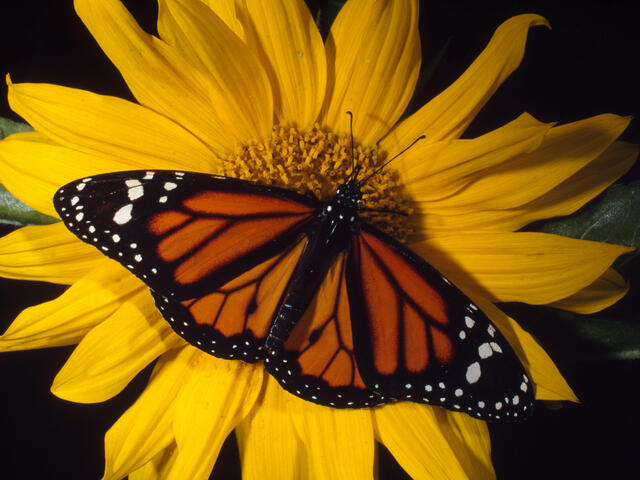

Las monarcas occidentales han disminuido en más del 99 por ciento desde la década de 1980. Las monarcas orientales han disminuido en aproximadamente un 80 por ciento.

Las mariposas monarca (Danaus plexippus) son mundialmente conocidas por la increíble migración masiva que lleva a millones de ejemplares a California y México cada invierno. La monarca norteamericana es la única mariposa que realiza una travesía tan espectacular, con una distancia cercana a los 5000 kilómetros. Estos insectos deben partir cada otoño antes de que llegue el frío, que acabaría con ellos si se demoran demasiado.
La monarca es una de las mariposas más reconocibles y mejor estudiadas del planeta. Sus alas naranjas están entrelazadas con líneas negras y bordeadas con puntos blancos. Aunque la mariposa monarca es nativa de América del Norte y del Sur, se ha extendido a otros lugares cálidos donde crece el algodoncillo, su único alimento.
Las mariposas monarca de América del Norte, que ya no se encuentran en América del Sur, se dividen en dos grupos principales: las monarcas occidentales, que se reproducen al oeste de las Montañas Rocosas y pasan el invierno en el sur de California; y las monarcas orientales, que se reproducen en las Grandes Llanuras y Canadá, y pasan el invierno en el centro de México. También hay poblaciones en Hawái; Portugal y España; y Australia, Nueva Zelanda y otras partes de Oceanía.
Las mariposas monarca occidentales alcanzaron en 2020 un mínimo histórico, colocándolas al borde de la extinción. A pesar de que el recuento cifró a esta especie en menos de 2000 en California, el gobierno decidió no incluirla como especie en peligro de extinción. A pesar de los esfuerzos de protección, estas cifras suponen una disminución muy importante frente a las 30 000 documentadas el año anterior y las millones que había en vuelo en la década de 1980.
Según las Unión Internacional para la Conservación de la Naturaleza (UICN), que estudió la especie en 2021, la mariposa monarca no corre peligro, aunque en su lista roja destaca que su población está en descenso. El organismo internacional señala su preocupación por la población de la especie en su migración más occidental, cuyos números "nunca habían sido tan bajos".
Ciclo de vida
Las mariposas monarca nacen en huevos, de los que eclosionan en forma de larva. A continuación se comen la cáscara del huevo y después se alimentan de las plantas del algodoncillo sobre las que nacieron. Por ello, las mariposas monarca dependen de las plantas del algodoncillo, que constituyen prácticamente el único alimento de las larvas.
La mariposa monarca hembra pone cada uno de sus huevos individualmente en la hoja de una planta de algodoncillo, adhiriéndolos con un poco de pegamento que secreta. Una hembra suele poner entre 300 y 500 huevos durante un período de dos a cinco semanas.
Después de unos días, los huevos se convierten en larvas, también conocidas como orugas en el mundo de las polillas y las mariposas. El trabajo principal de las orugas es crecer, por lo que pasan la mayor parte del tiempo comiendo algodoncillo, razón por la cual la hembra pone sus huevos en las hojas de algodoncillo.
Las orugas comen hasta saciarse durante unas dos semanas. Conforme engordan, las larvas se convierten en jugosas y coloridas orugas. Después crean una dura bolsa protectora que las rodea conforme entran en la fase de crisálida o la etapa de pupa.
Alrededor de una semana o dos más tarde, terminan su metamorfosis y emergen como mariposas monarca adultas completamente formadas, de color negro y naranja. Estas mariposas monarca nacen para volar, y saben, por el cambio en el clima, que deben prepararse para su prolongada travesía.
Estas mariposas desarrollan comportamientos diferentes dependiendo de cuándo completen su metamorfosis. Si emergen en la primavera o principios del verano, comenzarán a reproducirse en cuestión de días. Pero si nacen a finales del verano o del otoño, saben que se acerca el invierno, hora de dirigirse al sur para disfrutar de un clima más cálido.
De las crisálidas emergen en forma de adultos bellamente coloreados en negro, naranja y blanco. El colorido patrón de las monarcas hace que sean fáciles de identificar, y esa es la idea. Los colores distintivos advierten a los depredadores que tienen mal sabor y son venenosos. El veneno proviene de su dieta. El algodoncillo en sí mismo es tóxico, pero las monarcas han evolucionado no solo para tolerarlo, sino también para usarlo en su beneficio al almacenar las toxinas en sus cuerpos y volverse venenosas para los depredadores, como las aves.